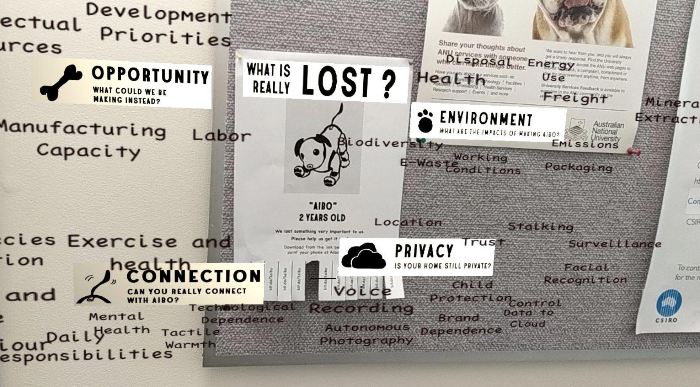

Hi, I'm Rodolfo
Let's do an experiment.
If you tap the screen or over move your mouse around, you will see that the color changes accordingly. Try to find your favorite. You will start to notice patterns, but you will also notice that your options are limited. One of the three components that determine a color was set randomly and remains fixed. The other two can be manipulated with the X and Y coordinates of your screen tap or cursor. But wait! You can roll the dice again to change your fixed variable for a new random number. If you want to find your favorite color, when will you decide to reroll vs. stay with your options? How do you navigate between randomness and agency?
Living things face these situations all the time but with many more factors that form complicated feedback loops. Surviving, making music, designing technology and organizing societies are full of them. I am intersted in understanding these systems in order to tell randomness from agency apart and find the the control dynamics. With this, I hope to make useful contributions to the fields of artistic creation, biology and the development of autonomous systems.
Hello from down under at the 3A Institute
At the moment, I am studying a masters degree at The Autonomy, Agency and Assurance Institute at the Australian National University, where we are building a new branch of engineering inpired by Norbert Wiener's Cybernetics and guide the development of cyber-physical systems towards desirable human and environmental outcomes.
Current Projects
Algorithmic music composer
For my first semester's final project I am working on developing a system capable of producing human enjoyable music. I have started playing with randomness and agency in the following Jupyter notebook using the Python language. At this stage, I have only created two different components algorithms, one semirandom and one that includes some music theory heuristics. So far, the second ones are perceived more enjoyable by the author. I have also started to create a drumbeat composer that uses frequency ratios between each percussion, instead of a sequence generator.
COVID-19 scholarly articles analysis
I am working on gaining insights from these articles in order to understand COVID-19 better, as a part of challenge launched in Kaggle and as a part of the data and sensors fortnight at the institute.
Past projects
Augmented Reality app to expose the resources used in building a robotic dog
As a part of our projects during the 'Taking things apart' fornight, my team and I built a simple app that looked at an image of the dog and overlaid AR elements.
Human + AI writing collaboration
For the portfolio piece required as a part of my application to the 3A Institue, I decided to write an essay in collaboration with the GPT-2 model.
The essay can be found here and the code used to create it can be found in this Colab Notebook
Games!
The taco game!
Press the following button and the word "taco" will be randomly inserted somewhere in the text. If you find one, click it to earn a point. It's hard, but don't desist! The victory high is worth it.
Why?
This game illustrates how our dopamine reward system is closely coupled with to our ability to distinguish signal from noise. Here, my website's text is the noise and the taco is your signal. I suspect that such a signal-reward mechanism is closely related to our enjoyment of music and that what I am exploring in my Algorithmic music composer project at the 3Ai. Here's the Jupyter notebook I told you earlier about where I will be doing most of my exploration.
The chaotic taco game!
Same game, but now the website text will be random nonsense blob of characters, except for the word 'taco'. Is finding the taco easier? Is it more rewarding? Well, I don't know. This is experimental, OK?
Blog: Ecofuturismo
Here I will be posting some essays and ideas about technology, ecological collapse, algorithmic creativity and many other topics that I cross along my search for the tools to build better future potential states.
Code
Check out my Github!